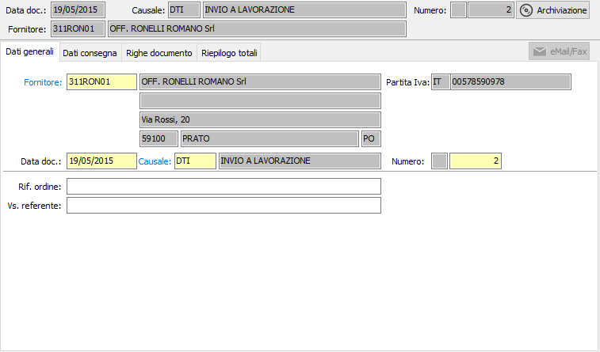

Dati generali
All’inizio di un nuovo Ddt il cursore è posizionato sul campo fornitore della linguetta dati generali, da cui inizia l’inserimento.

FORNITORE: codice alfanumerico di 8 caratteri, presente in anagrafica fornitori, che individua il fornitore da trattare. Sul campo, la cui compilazione è obbligatoria, sono attive le funzioni di ricerca (F9) ed accesso rapido alla tabella (CTRL+W) per eventuali nuovi inserimenti o variazioni. Il codice inserito in questo campo è quello del fornitore a cui è intestato il Ddt.
DATA DOCUMENTO: campo data in cui viene visualizzata la data di sistema, modificabile dall’utente.
CAUSALE: codice alfanumerico di 3 caratteri presente nella tabella Causali Ddt che definisce la tipologia di Ddt in esame. Se, presente, viene visualizzata la causale esistente nelle preferenze dell’anagrafica del fornitore in esame, modificabile dall’utente. Sul campo sono attive le funzioni di ricerca (F9) ed accesso rapido (CTRL+W) sulla tabella stessa.
NUMERO: campo numerico che contiene il numero progressivo del Ddt. Viene completato automaticamente dal programma in base alla serie contenuta dalla causale. E’ modificabile dall’utente. Se previsto dalla configurazione e non è presente il modulo di produzione è presente il pulsante Ordini e premendolo o premendo il tasto F12 è possibile effettuare la selezione degli ordini, da inserire nel Ddt.
RIFERIMENTO ORDINE: campo alfanumerico per l’eventuale descrizione degli estremi dell’ordine del fornitore.
VOSTRO REFERENTE: campo alfanumerico per l’eventuale descrizione del referente del fornitore. Se presente, viene proposto automaticamente il referente presente nell’anagrafica del fornitore intestatario del Ddt, modificabile. Sul campo sono disponibili le funzioni di ricerca (F9) sui contatti.